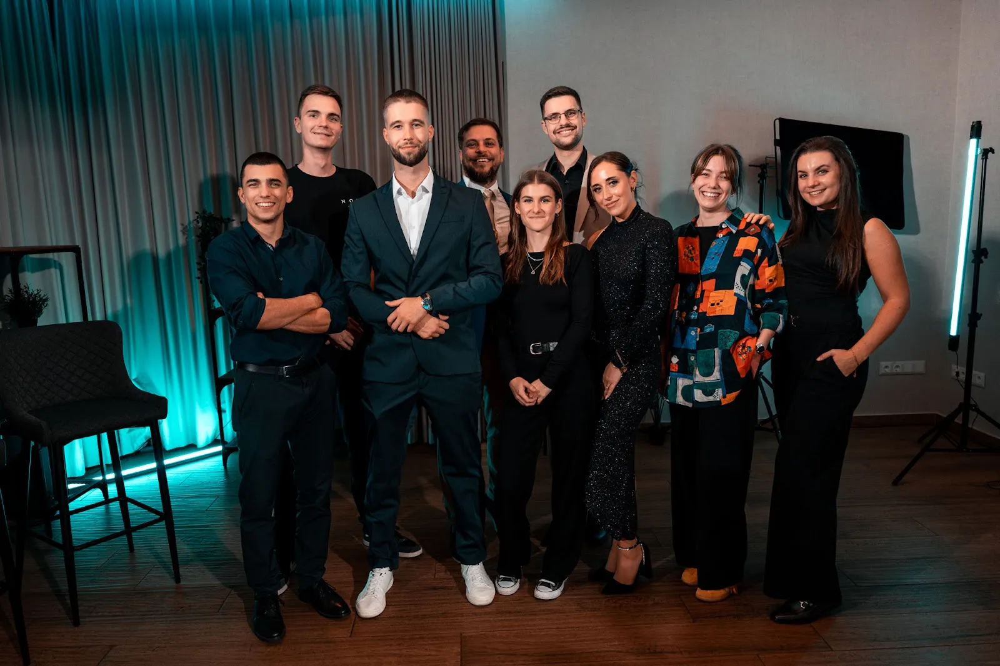
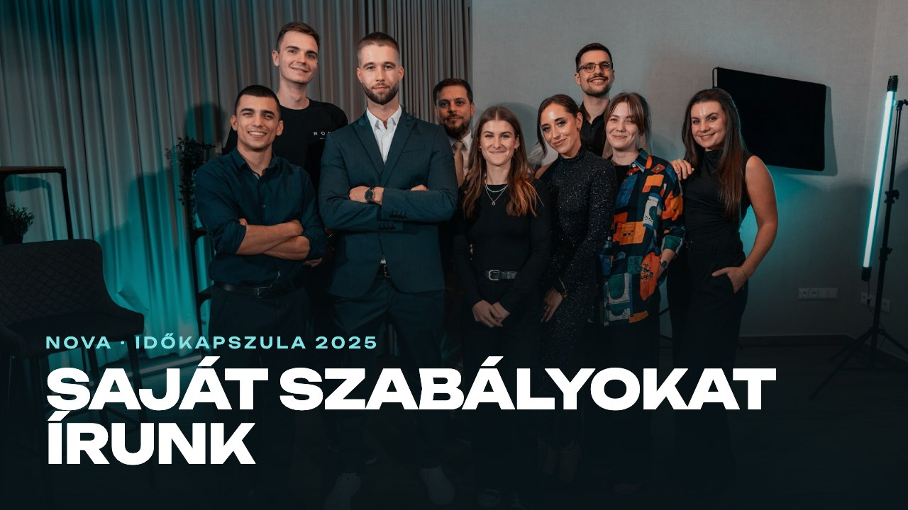
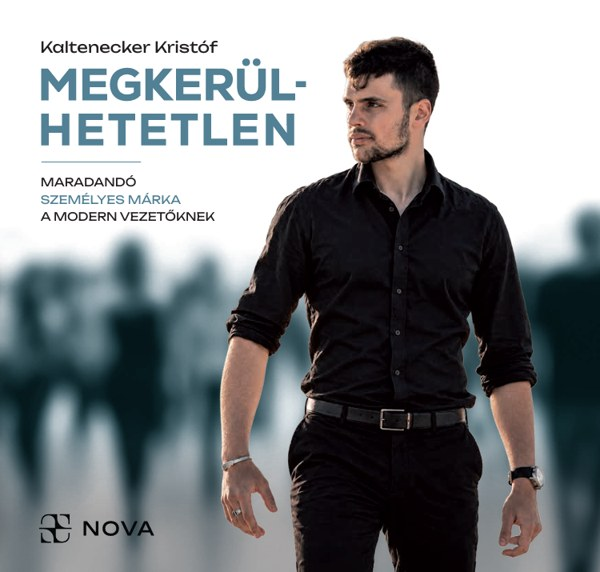

Nézz bele a csapatunk jelenlegi állapotába. Ezt a videót azért tettem a Rendszerek fejezet elejére, hogy lásd, kikről és miről beszélek, amikor a gépezetet működtető gépezetről írok.


Miért van itt ez a videó
Amikor otthagytam az egyetemet, még több éven keresztül egyéni vállalkozóként dolgoztam. Abban az időszakban az időm elsősorban a saját időmet jelentette. Ha többet akartam haladni, többet dolgoztam. Ha nagyobb eredményt akartam, több energiát tettem bele. Ez egy darabig működött.
Aztán megalapítottam a céget, növekedni kezdett a csapat, és egyszer csak már tizenegy ember munkájára volt hatással az, hogyan használom fel a saját időmet.
Döntések várnak rád. Emberek számítanak rád. Folyamatok állnak meg, ha minden lépéshez szükség van a jelenlétedre. Egy ponton pedig már nem tudsz egyszerűen több órát tenni a napba. Meg kell tanulnod egységnyi idő alatt többet élni. Ez a videó arról szól, hol tartunk ebben mi, 2025-ben.

A Rendszerek fejezet a gépezetet működtető gépezetről szól: olyan működésről a személyes márkád körül, amely nem követel minden egyes alkalommal emberfeletti erőfeszítést.
Magadat nem tudod kiszervezni. De azt a rendszert, amely a gondolataidból tartalmat készít, már nem kell minden alkalommal egyedül működtetned.
A jó rendszer legszebb pillanata az, amikor nélküled is működik. Olvass tovább, és nézd meg, mi kell ahhoz, hogy a tiéd is eljusson idáig.